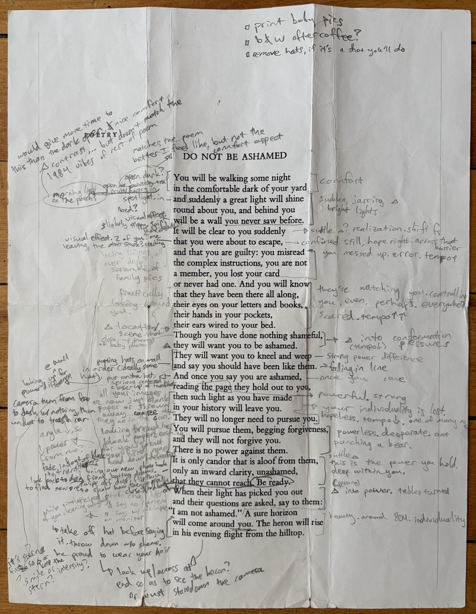

An experimental video about the poem Do Not Be Ashamed by Wendell Berry. My middle name is Wendell, named after this poet, so I have enjoyed reading his work and seeing how I connect with the art that my parents resonated with so strongly. I originally read this poem on a backpacking trip in the Yosemite National Park backcountry and began thinking about how it could be depicted as a video.
